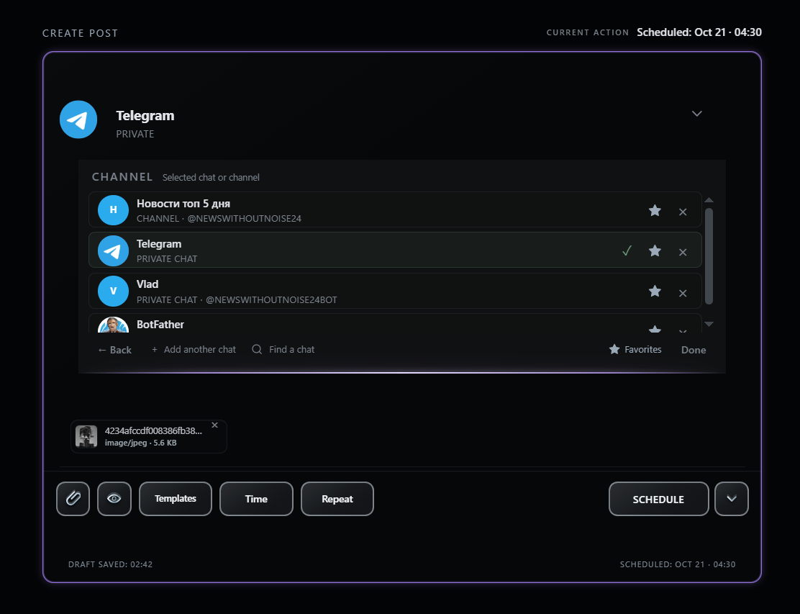
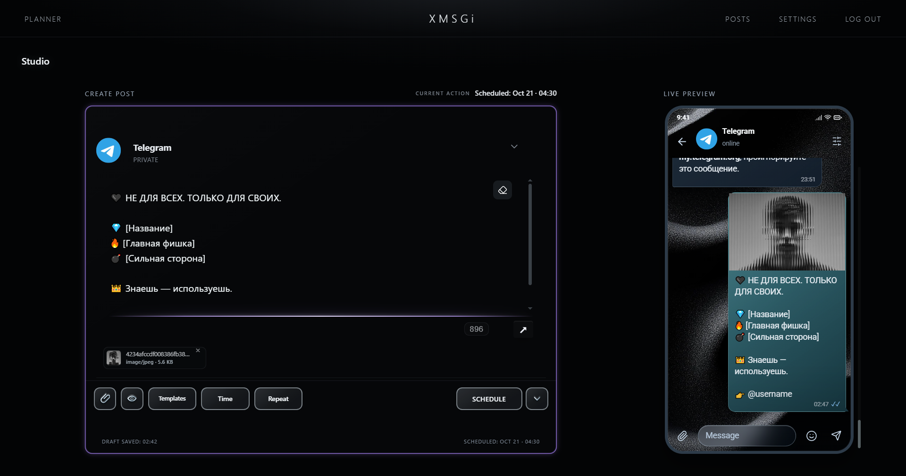

XMSGi Studio · 2026
Актуальный релиз: v1.3.6
Составляйте пост в удобное время — XMSGi Studio отправит его по расписанию, даже если компьютер выключен. Без ботов и облака — только ваш аккаунт.

Правьте, переносите и отслеживайте публикации — вплоть до самой отправки.

Скачайте и запустите — без установки и облака.
Сборки для macOS не подписаны и не notarized. При первом запуске в Finder нажмите Control и кликните по приложению, выберите «Открыть» и подтвердите запуск.